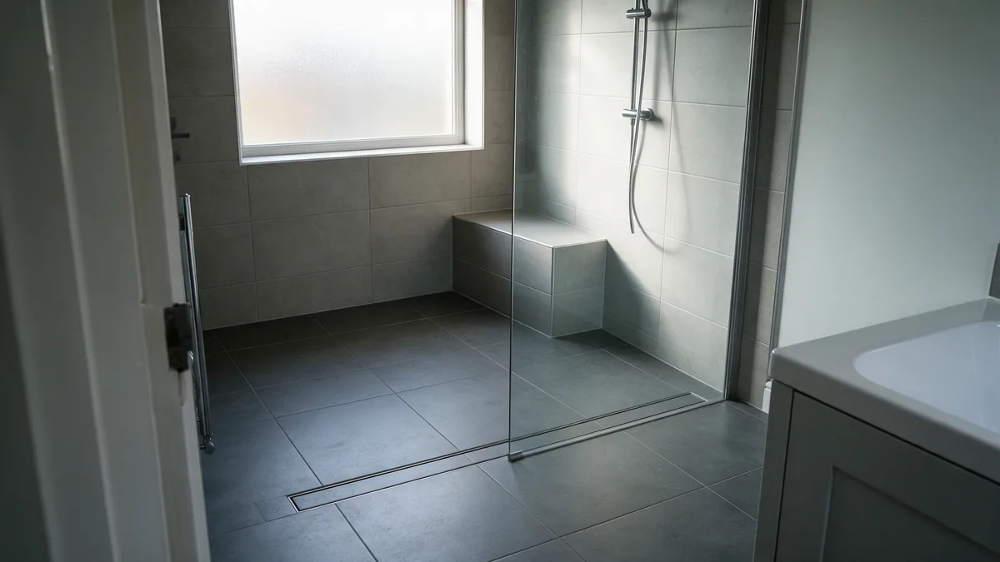

Advice · Sample article
Wet room or walk in shower: which suits your house
They get used as if they mean the same thing. They do not, and the difference is mostly about your floor.

Generated photoPeople use these two as if they mean the same thing, and showrooms are not always in a hurry to correct them. They are different builds, they cost different money, and the thing that decides which one suits your house is usually the floor rather than the look.
What a wet room actually is
In a wet room the floor of the room is the floor of the shower. There is no tray and no step. The boards or the screed are cut out, a former goes in with a fall built into it, a drain is connected to the waste, the whole area is tanked, and then it is tiled through with the fall left in. The water runs to the drain because the floor sends it there.
The two things that make or break it are depth and tanking. You need enough depth under the floor to get the former and the drain in, and the tanking has to be continuous, into the corners and up the walls, with nothing put through it afterwards.
What a walk in shower is
A walk in shower is a tray and a screen sitting in a normal bathroom floor. The tray might be low profile, so it is nearly flush, but there is still a lip. Nothing structural changes, the tray holds the water instead of the floor, and if something ever goes wrong you can see where.
Which one suits your house
A wet room makes sense when
- You want genuine level access, with nothing to step over.
- The room is small and a tray would eat the only standing space.
- There is depth in the floor for the fall, or you are on a ground floor slab being dug out anyway.
- You want the floor to run through without a break.
A walk in shower makes sense when
- You are upstairs on shallow joists and the fall is a fight.
- You would rather the water was contained by something you can inspect.
- You want it simpler and quicker, with less to go wrong.
- It is a rental or you may change it again in a few years.
The upstairs question
Most of the nervousness about wet rooms upstairs is about timber floors, and it is fair. It can be done, with formers made for timber floors, as long as the joists will take the notching and there is depth to work with. Sometimes the honest answer is that there is not, and the right answer is a low profile tray that sits almost flush. That is not a worse bathroom. It is the one that will still be dry in ten years.
Why wet rooms leak
When a wet room goes wrong it is nearly always the tanking, not the plumbing. A corner missed, the wrong tape at a change of plane, or the next trade putting a fixing straight through it. It is the one part of the job that disappears behind tile and can never be inspected again, which is exactly why it is worth knowing who did it and watching them do it.
What we would ask you
Who is using the room, and is level access the point or just the preference? What is under the floor? Is it a forever bathroom or a ten year one? The answers usually make the choice obvious, and it is not always the more expensive one.
Written for this demo as general guidance. It is not advice on your bathroom, and products and rules change. Check anything that matters with somebody who has seen the room.
More advice
Also worth a read
Why a shower leaks through the ceiling, and what to check
A stain downstairs almost never means the pipe has burst. Here are the usual suspects, in the order to check them.
Read it →Planning a bathroom refit: the order things happen
Every refit runs in roughly the same order. Knowing it is what stops you buying the wrong thing at the wrong time.
Read it →Ready to get the room looked at?
Tell us what you are planning and we will come and measure it up properly.